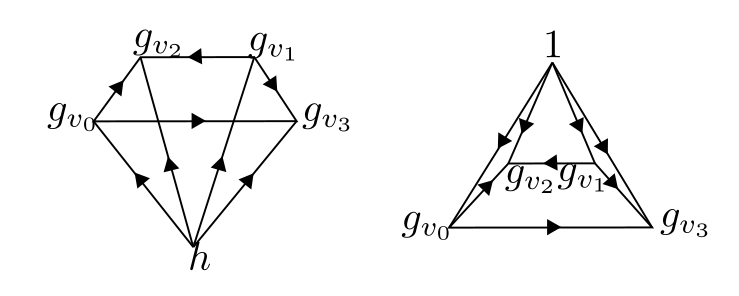
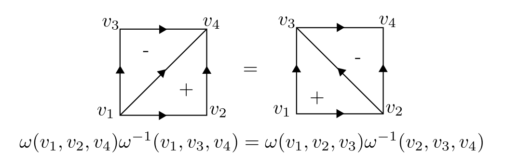
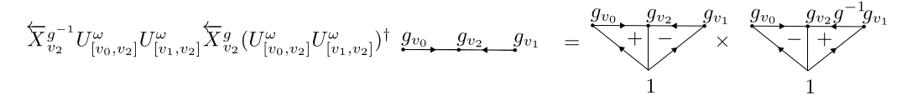
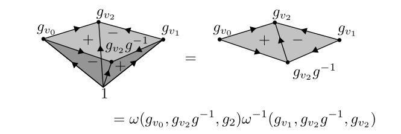
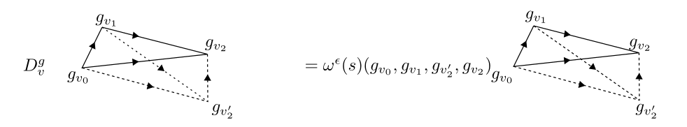
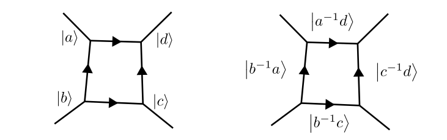
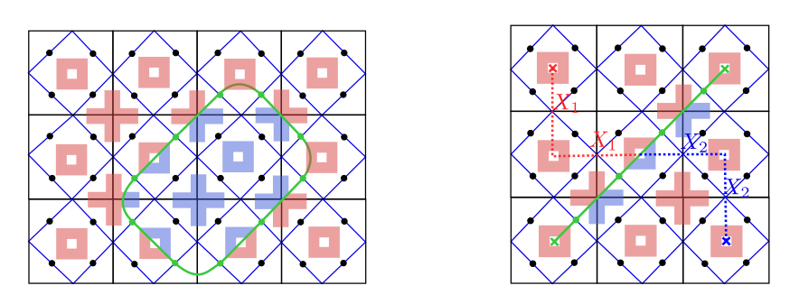
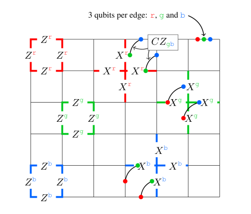
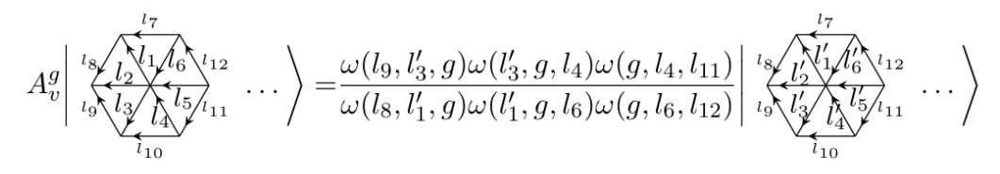
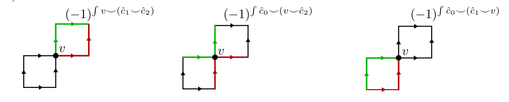

Symmetry-protected topological states, topological order, and group cohomology
Blog Post 3-15-26
Group cohomology
Definition 1 (Group cohomology). Let \(G\) be a group and \(A\) be a trivial \(G\)-module. Let \(EG\) be the free simplicial complex on \(G\), i.e. the \(k\)-simplices of \(EG\) are \(k\)-tuples \([g_0, \ldots, g_k]\), with possible repeated elements. Consider the action of \(G\) on \(EG\) by \(g[g_0, \ldots, g_k] = [gg_0, \ldots, gg_k]\). Then let \(EG/G \equiv BG\), i.e. \([g_0, \ldots, g_k] \equiv [1,g_0^{-1}g_1, \ldots, g_0^{-1}g_k]\) in \(BG\) (note that \(BG\) is a CW complex, not a simplicial complex). The cohomology of this complex with coefficients in \(A\) is what we call the group cohomology (with coefficients in \(A\)). \(BG\) is a defined up to homotopy by the property \(\pi_1(BG) \cong G\), and is commonly called the classifying space of \(G\).
Prop 1 (Coboundary formula). From the definition above, we have the following boundary formula for group cocycles \[\begin{aligned} \delta \phi(g_0, \dots, g_k) \equiv \delta \phi([g_0, \dots, g_k]) &= \phi(\partial[g_0, \cdots, g_k]) = \sum_{i}(-1)^i\phi(g_0, \dots, \widehat g_i, \dots, g_k) \end{aligned}\] subject to the condition \(\phi(gg_0, \dots, gg_k) = \phi(g_0, \dots, g_k)\) for any \(G \in g\).
Definition 2 (Bar resolution). It is convenient to note that for any \([g_0, g_1, g_2, \cdots, g_k] \in BG\), we have \[\begin{aligned} [g_0, g_1, g_2, \cdots, g_k] &= g_0[1, g_0^{-1}g_1, \cdots, g_0^{-1}g_k]\notag\\ &= [1, g_0^{-1}g_1, (g_0^{-1}g_1) (g_1^{-1}g_2) \cdots, (g_0^{-1}g_1) \ldots (g_{k-1}^{-1}g_k)] \notag \\ &\equiv [1, h_1, h_1h_2,\cdots, h_1\ldots h_k]\equiv [h_1 | h_2 | \cdots | h_k], \end{aligned}\] which is commonly denoted with bars, hence the name “bar resolution". Note the boundary formula for the simplicial chains of \(BG\): \[\begin{aligned} \partial [h_1 | \cdots | h_k] &= \partial [1, h_1, h_1h_2, \cdots, h_1\ldots h_k] \notag \\ &= [1, h_2, h_2h_3, \cdots, h_2 \ldots h_k] + \sum_{i=2}^k(-1)^{i} [1, h_1, \cdots, \widehat{h_1 \ldots h_i}, \cdots, h_1 \ldots h_k] \notag \\ &= [h_2 | \cdots | h_k] + \sum_{i=2}^{k-1}(-1)^{i} [ h_1 | \cdots| h_{i-1} | h_ih_{i+1} | \cdots | h_k] + (-1)^k[h_1 | \cdots | h_{k-1}] \end{aligned}\]
Definition 3 (Inhomogeneous). In the literature [1], cocycles using the simplicial representation of the simplices of \(BG\) vs the bar representation of \(BG\) are called homogeneous and \(\textit{inhomogeneous}\) cocycles. Frequently, the formulas are prettier in inhomogeneous form, but the topological depiction is clearer in homogeneous form.
Corollary 1 (Inhomogeneous coboundary). The boundary map for inhomogeneous cocycles is the following: \[\begin{aligned} \delta \phi(h_1| \dots| h_k) &= \phi(h_2| \dots| h_k) + \sum_{i=2}^{k-1}(-1)^i\phi(h_1| \dots| h_{i-1}|h_ih_{i+1}| \dots| h_k) + (-1)^k\phi(h_1| \dots| h_{k-1}) \end{aligned}\] Note that it is non-standard to put the bars in the cochains, but we will adopt this convention to easily move between the two pictures.
Definition 4 (Normalized cocycles). It is frequently convenient to quotient by the subcomplex of \(BG\) consisting of simplices \([g_0, \dots, g_k]\) where \(g_i = g_{i+1}\) for any \(i\). This removes “degeneracies" in \(EG\). In the bar resolution picture, this is the same as quotienting by simplices \([h_1 | \ldots | h_k]\) if \(h_i = 1\) for any \(i\). The corresponding chain complexes are called normalized, and in cohomology, this is equivalent to requiring that \(\phi = 0\) on the quotiented subcomplex. Every cocycle is cohomologous to a normalized cocycle.
Cocycles in low dimension
Corollary 2 (Cocycles in low-dimension). \(\mathrm H^1(G, A) \cong \text{Hom}(G, A)\).
Proof. Let \(b \in C^1(G, A)\) \[\begin{aligned} \delta b(g_1|g_2) = b(g_2) - b(g_1g_2) + b(g_1) = 0 \end{aligned}\] ◻
Corollary 3 (Shur multipliers). Projective representations of \(G\) over \(\mathbb F\) are classified by a linear representation \(V\) of \(G\) (over \(\mathbb F\)) and a 2-cocycle \(\omega \in H^2(G, \mathbb F)\).
Proof. Given a projective representation of \(G\), we know that there is a representation \(\rho\) and a function \(\omega : G \times G \to \mathbb F\) such that \(\rho(g_1)\rho(g_2) = \omega(g_1, g_2)\rho(g_1g_2)\) by definition. By associativity, \[\begin{aligned} \rho(g_1g_2g_3) &= \omega(g_1g_2, g_3)\rho(g_1g_2)\rho(g_3) = \omega(g_1g_2, g_3)\omega(g_1, g_2)\rho(g_1)\rho(g_2)\rho(g_3) \notag \\ \rho(g_1g_2g_3) &= \omega(g_1, g_2g_2)\rho(g_1)\rho(g_2g_3) = \omega(g_1, g_2g_3)\omega(g_2,g_3)\rho(g_1)\rho(g_2)\rho(g_3) \end{aligned}\] Equating the two lines, \[\omega(g_2, g_3) \omega(g_1, g_2g_3) = \omega(g_1, g_2)\omega(g_1g_2, g_3)\] Or, in additive notation, \[\omega(g_2, g_3) -\omega(g_1g_2, g_3) +\omega(g_1, g_2g_3) - \omega(g_1, g_2) = \delta \omega(g_1| g_2| g_3) = 0\] This shows that \(\omega\) is a 2-cocycle. Furthermore, suppose that \(\tau(g)\) also lifts \(g\). Then \(\tau(g) = f(g)\rho(g)\) for some \(f:G \to \mathbb F\). We find \[\begin{aligned} \tau(g_1g_2) &= c'(g_1, g_2)\tau(g_1)\tau(g_2) = c'(g_1,g_2)f(g_1)f(g_2)\rho(g_1)\rho(g_2) \notag\\ \tau(g_1g_2) &= f(g_1g_2)\rho(g_1g_2) = f(g_1g_2)c(g_1, g_2)\rho(g_1)\rho(g_2) \end{aligned}\] The above chain of equalities shows that \[\begin{aligned} c(g_1,g_2) = \frac{f(g_1)f(g_2)}{f(g_1g_2)}c'(g_1,g_2) = (\delta f)(g_1|g_2)c'(g_1, g_2), \end{aligned}\] so the two cocycles differ by a coboundary. ◻
Corollary 4. Central extensions, or groups \(G\) which fit into a short exact sequence of the form
where \(i(A) \in Z(G)\) are classified by a cocycle \(\omega \in \mathrm H^2(Q, A)\).
Proof. Let \(s\) be a section of \(p\), i.e. \(p \circ s = \text{Id}\). Note that \(s\) is not necessarily a homomorphism. Since \(i\) is injective, we can consider \(A\) as a subgroup of \(G\). Let \[\begin{aligned} c(q_1, q_2)\equiv s(q_1)s(q_2)s(q_1q_2)^{-1} , \end{aligned}\] commonly called a factor system. Since \[\begin{aligned} p[c(q_1, q_2)] = p[s(q_1)s(q_2)s(q_1q_2)^{-1}] = q_1q_2(q_1q_2)^{-1} = 1 \end{aligned}\] we have \(c(q_1, q_2) \in \ker p = A\) (by exactness). We can compute \[\begin{aligned} \delta c(q_1, q_2, q_3) &= c(q_2, q_3)c(q_1, q_2q_3) c(q_1q_2, q_3)^{-1}c(q_1, q_2)^{-1} \notag \\ &= c(q_2,q_3)s(q_1)s(q_2q_3)s(q_3)^{-1}s(q_2)^{-1}s(q_1)^{-1} \notag \\ &= c(q_2,q_3)c(q_2, q_3)^{-1} = 1 \notag \\ \end{aligned}\] where we used the fact that \(A\) is central, so \(c(q_2, q_3)\) commutes with all elements of \(G\). Furthermore, two isomorphic extensions (in the sense of isomorphism of chain complexes, which we have not defined) will produce two sections \(s, s'\) of \(p\). Let \(\beta \equiv s(g)s'(g)^{-1}\). Since \(p \beta(g) = 1\), we have \(\beta(g) \in A\). Furthermore, \[\begin{aligned} c'(q_1, q_2) &= \beta(q_1)s(q_1)\beta(q_2)s(q_2)s(q_1q_2)^{-1}\beta(q_1q_2)^{-1} \notag \\ &=\beta(q_1)\beta(q_2)\beta(q_1q_2)^{-1}s(q_1)s(q_2)s(q_1q_2)^{-1} \notag \\ &= (\delta \beta)(q_1, q_2)c(q_1, q_2) \end{aligned}\] where we used the fact that \(\beta(q) \in A \leq Z(G)\). ◻
Remark 1. The multiplication in \(G\) is defined by the following: the choice of section \(s\) is a choice of coset of \(A\) in \(G\) with coset representatives \(q \in Q\). Given \(g \in G\), we can write \(g = a_gq_g\) uniquely with \(q_g = p(g) \in Q\) and \(a_g = gq_g^{-1} = gs(p(g))^{-1}\). Since \(p a_g = p(g)p(g)^{-1} = 1\), we have \(a_g \in A\). Then the multiplication rule is given by \[\begin{aligned} (a_g, q_g)\cdot (a_h, q_h) \equiv (a_{gh}, q_{gh}) &= (gh s(p(gh))^{-1}, p(gh)) \notag\\ &= (gh s(p(h))^{-1}s(p(g))^{-1}c(p(g), p(h)), p(g)p(h), p(g)p(h)) \notag \\ &= (a_ga_hc(q_g, q_h), q_gq_h) \end{aligned}\] This shows additionally that \(Q\) is always normal in \(G\). Furthermore, if \(A\) is a field, then projective representations over \(A\) are in bijection with central extensions of \(G\) by \(A\).
SPT states and twisted quantum doubles
Definition of SPT states
We will explain SPT states, first through their symmetry properties and wavefunctions following [2], then through their stabilizers following [3]. First, consider a triangulation \(T\) of a \(d\)-dimensional orientable manifold \(M\) and a finite group \(G\). Let \(S_k(T)\) denote the \(k\)-simplices in \(T\).
Definition 5 (fundamental class). We put an acyclic orientation on the edges of \(M\) and choose a total ordering of the vertices of \(M\) which is consistent with this orientation. Then for each \(d\)-simplex \(s\), the ordering of the vertices of \(s\) defines an orientation of \(s\). We then define \(\epsilon(s) = \pm 1\) if this orientation agrees (disagrees) with the orientation of the manifold. Now, we define the fundamental class \[\begin{aligned} \label{} [M] \equiv \sum_{s \in S_d(T)}\epsilon(s)s \in C^d(T, \mathbb Z) \end{aligned}\] and we will write the pairing of \([M]\) with \(\alpha \in H^d(M, \mathbb Z)\) as \[\begin{aligned} \alpha([M]) \equiv \int_{[M]}\alpha \end{aligned}\]
To each 0-simplex, we associate the Hilbert space \(\mathbb{C}G\). Equivalently, we can think of the Hilbert space as spanned by 0-form \(G\)-fields, i.e. simplicial maps from the vertices of \(T\) into \(G\): \[\begin{aligned} a \in \mathbb C \text{Hom}(M, EG) \hspace{2cm} \ket{a} \equiv \bigotimes_{v \in S_1(T)}\ket{a(v)} \end{aligned}\] Then let \[\begin{aligned} \label{eq:trivial-SPT-definition} \ket{+_G} = \bigotimes_{v \in V} \sum_{g \in G}\ket{g}_{v} = \sum_{a: M \to EG}\ket{a} \end{aligned}\] represent the trivial SPT state (with the trivial \(G\) action). We will drop normalization factors for convenience. Given \(\omega \in H^{d+1}(G, \mathrm{U}(1))\), we will define an operator called the SPT entangler, which is a non-symmetric (does not commute with the action of \(G\) simultaneously on all qudits) local unitary \[\label{eq:SPT-entangler-definition} U^\omega\ket{a} = a^* i_{g_*}\omega([M])\ket{a}\] where \(g_* \in G\) is arbitrary, and we have defined the interior product \[\begin{aligned} \label{eq:interior-product-definition} (i_g\omega)(g_0, \dots, g_d)\equiv \omega(g, g_0, \dots, g_d) \end{aligned}\] and the pointwise pullback \(a^*:H^k(G, \mathrm{U}(1)) \to H^k(T, \mathrm{U}(1))\) for \(\beta \in H^k(G, \mathrm{U}(1))\) via \[\begin{aligned} \label{eq:pointwise-pullback-definition} (a^* \beta)([v_1, \dots, v_d]) \equiv \beta([a(v_1), \dots, a(v_d)]) \end{aligned}\] As we will argue, the SPT wavefunction is independent of the choice of \(g_*\) when \(M\) is closed. We can explicitly express \(U^\omega\) as a local operator using linearity: \[\begin{aligned} \label{eq:SPT-entangler-is-local} U^\omega \ket{a} = \prod_{s = [v_0, \dots, v_d]}\omega(g_*, a(v_0), \ldots, a(v_d))\ket{a} \end{aligned}\]
Another useful way to express this wavefunction is as a partition function. Let \(\beta \in H^{d+1}(G, \mathbb R/\mathbb Z)\) such that \(\omega = (-1)^\beta\). Let \(N\) be the cone of \(M\), i.e. \(N = M \times [0,1]/M \times \{1\}\), fix the triangulation of \(N\) to be that of \(M\) with a single additional vertex at \(\{1\} \times M\). We can imagine this vertex as representing the ‘bulk’ of \(N\). Then \[\begin{aligned} \label{eq:SPT-statesum-definition} \ket{+^\omega_G} = \sum_{g_* \in G \text{ bulk}} \sum_{a:M \to G}Z[a]\ket{a} \end{aligned}\] where \[\begin{aligned} \label{eq:SPT-partition-function-defintion} Z[a] \equiv \sum_{g_* \in G \text{ bulk}} a^* \omega([N]) = \sum_{g_* \in G \text{bulk}}\mathrm{e}^{\pi \mathrm{i}\int_{N}a^* \beta} \end{aligned}\] is a partition function with ‘boundary condition’ \(a\). For this reason \(\omega\) is sometimes called the topological action associated with the SPT state.
Properties of SPT states
Using \(G\)-invariance of the cocycles, we see that \[\begin{aligned} \label{eq:transformation-under-G-action} \prod_v \overleftarrow X^h_v \ket{+^\omega_G} &= \sum_{\vb g \in G^{|V|}}\prod_{s \in S_d(M)}\omega(g_*, s)\ket{\vb gh^{-1}} = \sum_{\vb g \in G^{|V|}}\prod_{s \in S_d(M)}\omega(g_*h^{-1}, s)\ket{\vb g} \end{aligned}\] Therefore the global action of \(G\) is equivalent to a different choice of \(g_*\). When \(M\) is closed, \(Z[a]\) is invariant under this change, and when \(M\) has a boundary, there is an anomaly, i.e. the partition function transforms with a nontrivial phase corresponding to topologically protected edge modes.
Prop 2. The anomalous phase is given by \[\begin{aligned} i_gi_1\omega([\partial M]) \end{aligned}\]
Proof. We will use additive notation. Let \(\gamma \in H^{d+1}(M, \mathbb R/\mathbb Z)\) such that \(\omega = (-1)^\gamma\). Using Eq. [eq:transformation-under-G-action], the anomalous phase is given by \[\begin{aligned} \int_{[M]} i_g\gamma - i_1 \gamma \end{aligned}\] Then we have \[\begin{aligned} 0 = \int_{M} i_gi_1\delta \gamma &= \int_{[M]} i_g\gamma - i_1 \gamma + \delta i_gi_1\gamma \\ &= \int_{[M]} i_g\gamma - i_1 \gamma + \int_{[\partial M]}i_gi_1\gamma \end{aligned}\] where in the last line we applied discrete Stoke’s theorem. This proves the claim. ◻
Example 1. This becomes particularly apparent in (1+1)d. Consider \(M \cong S^1\) and a triangulation consisting of 4 spins. Let \(\epsilon([i, i+1]) = (-1)^i\). Then \(\prod_{i}\omega^{(-1)^i}(h, i, i+1)\) is the phase we get by applying \(\omega\) to the faces of the simplex shown on the left side of the panel below:

Applying \(\omega\) to the right side, we get \(\prod_{i}\omega^{-(-1)^i}(1, i, i+1)\). But if we glue the two halves together at the face in the center, we clearly find a union of 3-simplices \(t\), and \[\prod_{i}\omega^{(-1)^i}(h, i, i+1) \prod_{j} \omega^{-(-1)^j}(1, j, j+1) = \delta \omega(t) = 0\] If the boundaries were open, then there is a phase corresponding to the two missing faces which connect the two open boundaries: \[\begin{aligned} \frac{\omega(h, v_0, v_3)}{\omega(1, v_0, v_3)} = \frac{\omega(1,h, v_3)}{\omega(1,h, v_0)} \end{aligned}\] This is an explicit example of the formula in Prop. 2.
Another reason for calling these phases topological is that there are no short-range degrees of freedom, and only the long-range ‘topological’ DOFs remain. The physical manifestation of this is that the partition function is unchanged when \(M\) is retriangulated. Any retriangulation can be performed by a sequence of “Pachner moves," [4] which all amount to adding the boundary of a \(d+2\)-simplex. A consequence of this is that the cocycle condition is equivalent to invariance under Pachner moves.
Example 2. To illustrate this, we give a \((1+1)d\) example:

Next, we will explain why the classification factors through the quotient by coboundaries.
Prop 3. Suppose that \(M\) is closed. Then there is a local, finite-depth, \(G\)-symmetric circuit \(U\) such that \(\ket{+^\gamma_G} = U\ket{+^{\gamma + \delta \beta}_G}\). This is not the case when \(M\) is open.
Proof. The difference in phase between the two SPT entanglers is the following: \[\begin{aligned} \int_{[M]} i_g\delta\beta ([M]) &= \int_{[M]}\beta - \delta i_g\beta \\ &= \int_{[\partial M]}i_g \beta + \int_{[M]} \beta \end{aligned}\] We see that the phase \(\int_{[M]}\beta\) is \(G\)-symmetric and local, which proves the claim. ◻
Stabilizers
The stabilizers of \(\ket{+_G^\omega}\) are \[\label{eq:TQD-stabilizers-definition} \widetilde X_v^g \equiv U^\omega \overleftarrow X_v^g (U^{\omega})^\dagger = \prod_{s \ni v}U_{s}^\omega \overleftarrow X_v^g (U^{\omega}_s)^\dagger\] (note the symmetry operators are taken to be right multiplication). Now the goal is to find a diagonal operator \(D_v^g\) such that \[\begin{aligned} \label{eq:phase-of-TQD-stabilizers-definition} \widetilde X^g_v = \overleftarrow X^g_vD_{v}^g \end{aligned}\] This is given by Eq. 30 in [3]. We will derive it below.
Prop 4. Suppose that \(v\) is a bulk vertex, i.e. there are no simplices \(s \ni v\) which intersect with the boundary of \(M\). Then \[\begin{aligned} D_v^g = \prod_{s = [v_0, \dots, v_d] \ni v}\omega^{\epsilon'(s)}(v_0, \ldots, vg^{-1}, v, \ldots, v_n) \end{aligned}\] where \(\epsilon' = \pm 1\) if \(\epsilon = \pm 1\) and \(v = v_i\) where \(i\) is odd(even).
Proof. We can write down an explicit formula for \(D_{v}^g\): \[\begin{aligned} D_v^g = \qty(\overleftarrow X^{g^{-1}}_v\prod_{s \ni v}U_s^\omega \overleftarrow X^g_v \prod_{s' \ni v}\qty(U_{s'}^\omega)^\dagger) &= \prod_{s \ni v} \omega^{\epsilon(s)}(g_*, v_1, \ldots, vg^{-1}, \ldots, g_n) \omega^{\epsilon(s)}(g_*, v_1, \ldots, v, \ldots, g_n) \end{aligned}\] Then for each simplex \(s \ni v\), consider the \(d+2\)-simplex \[\begin{aligned} S_s = [g_*, v_1, \ldots, vg^{-1}, v, \ldots, v_n] \end{aligned}\] If we compute \(\partial S_s\), we see that whenever \(v_i\) is removed, the resulting face is also contained within another simplex \(S_{s'}\) where \(s'\) contains \(v\), and due to their shared edge, \(\epsilon(s') = -\epsilon(s)\) (this is true because \(v\) is a bulk vertex). The only faces which do not have any \(v_i\) removed are unique to \(S_s\), and are \[\begin{aligned} &[v_1, \ldots, v_g^{-1}, v, \ldots, v_n] & &[g_*, v_1, \ldots, v, \ldots, v_n] & &[g_*, v_1, \ldots, vg^{-1}, \ldots, v_n] \end{aligned}\] Therefore we find \[\begin{aligned} \prod_{s \ni v} \omega^{\epsilon(s)}(g_*, v_1, \ldots, vg^{-1}, \ldots, g_n) \omega^{-\epsilon(s)}(g_*, v_1, \ldots, v, \ldots, g_n) &= \prod_{s \ni v} \delta\omega^{\epsilon'(s)}(S_s) \omega^{-\epsilon'(s)}(v_1, \ldots, vg^{-1}, v, \ldots, v_n) \notag\\ &= \prod_{s \ni v} \omega^{-\epsilon'(s)}(v_1, \ldots, vg^{-1}, v, \ldots, v_n) \end{aligned}\] where \(\epsilon' = 1\) if \(\epsilon = \pm 1\) and \(v = v_i\) where \(i\) is even(odd). This completes the proof. ◻
Example 3. We will again give a 1d example. Consider a 1d state and a stabilizer \(\widetilde X^g_{v_2}\) which acts on a vertex \(v_2\) neighbored by vertices \(v_0, v_1\). The two simplices \(s\) containing \(v_2\) are \([v_1, v_2]\) and \([v_0, v_1]\). Thus, the commutator evaluates to

where on the right, the value is determined by taking the product of \(\omega\) evaluated on each of the four 2-simplices and and inverting if the orientation is negative. We can see that this product forms the faces of two tetrahedra, as shown below:

We notice that the phase in Prop. 4 corresponds to the cocycle \(\omega\) applied to a \(d+1\)-simplex obtained from a simplex \(s\) of \(M\) by adding an additional vertex \(vg^{-1}\) ordered such that it appears right before \(v\).
Example 4. The following diagram shows the 3d simplex constructed from a 2d simplex of \(M\) as described above:

Lastly, the cocycle condition gives us the important property that
Prop 5. \[\widetilde X_v^g \widetilde X_v^h = \widetilde X_v^{gh}\]
Proof. \[\overleftarrow X_v^{h^{-1}}D_v^g \overleftarrow X_v^hD_v^h = \prod_{s = [v_1, \cdots, v_n] \ni v}\omega^{\epsilon(s)}(v_1, \ldots, vh^{-1}g^{-1}, v, \ldots, v_n)\omega^{\epsilon(s)}(v_1, \ldots, vg^{-1}, v, \ldots, v_n)\] Consider the simplex \[\begin{aligned} S_s &= [v_1, \ldots, v, vh^{-1}, vh^{-1}g^{-1}, \ldots, v_n] \end{aligned}\] We see that any face of \(S_s\) which contains \(v, vh^{-1}, vh^{-1}g^{-1}\) is also the face of a unique other simplex \(s'\) containing \(v\), and due to the opposite orientations, these faces cancel. Therefore we have \[\begin{aligned} &\prod_{s = [v_1, \cdots, v_n] \ni v}\omega^{\epsilon(s)}(v_1, \ldots, vh^{-1}g^{-1}, v, \ldots, v_n)\omega^{\epsilon(s)}(v_1, \ldots, vg^{-1}, v, \ldots, v_n) \\ &= \prod_{s = [v_1, \cdots, v_n] \ni v}\delta \omega^{\epsilon(s)}(S_s)\omega(v_1, \ldots, v, vh^{-1}g^{-1}, \ldots, v_n) = D_v^{gh} \end{aligned}\] as required. ◻
We will explore some other important properties of the stabilizers. First, we will define an operator \[\begin{aligned} \label{eq:stabilizer-product-phase-definition} D^g = \prod_{v}X_v^{g^{-1}}\widetilde X_v^g = \prod_{v}X_v^{g^{-1}}U^\omega\prod_{v}\widetilde X_v^g(U^\omega)^\dagger = \prod_{s \in S_d(M)}\frac{i_g\omega^{\epsilon(s)}(s)}{i_1\omega^{\epsilon(s)}(s)} \end{aligned}\] Comparing this to Eq. [eq:transformation-under-G-action], we see that the operator \(D^g\) is exactly the anomalous phase at the boundary.
Twisted topological order from gauging SPT phases
There is a duality between SPT phases with an onsite \(G\)-symmetry and twisted quantum doubles, where both are classified by \(H^{d+1}(G, \mathrm{U}(1))\). In this section, we will introduce the procedure of gauging that realates the two models. First, we recall the general procedure of gauging [5]. Take a cellulation of a 2D orientable surface \(\Sigma = (V, E, F)\). Suppose that \(\ket{\psi}_V\) is some \(G\)-symmetric state on the vertices. Place the state \(\ket{\vb 1}_E\) on the edges (more generally, one can put any flux-free state on the edges to prepare another ground state, but for now we focus on the trivial state). Then we implement the following “Kramers-Wannier" (KW) map, which can be described as follows:
Map site variables to bond variables
Turn the onsite \(G\) symmetry into a gauge symmetry

This map results in the following transformation of operators: \[\begin{aligned} \overrightarrow X_v^g &\mapsto 1 & \overleftarrow X_{v}^g &\mapsto \prod_{(v, e)}X_{e}^{g} & (Z_v^{\Gamma})^\dagger Z_{v'}^{\Gamma} &\mapsto Z^{\Gamma}_e \label{eq:gauging} \end{aligned}\] where \(e = [v,v']\) and \(X^g_e\) acts by left(right) translation if \(e\) is oriented away from(toward) \(v\). Note that left translation becomes trivial while the \(G\)-symmetry is implemented by right translation. This is fixed by the convention that path ordering is from left-to-right.
Now we will see that when we gauge these stabilizers, we obtain the stabilizers from Refs. [4], [6]. Consider writing down the inhomogeneous version of the cocycle phase in Prop. 4: \[\begin{aligned} \omega(v_1, \ldots, vg^{-1},v, \ldots, v_n) &= \omega(g_{[v_0,v_1]} | g_{[v_1,v_2]} | \ldots | g_{[v_{i-1}, v_i]}g^{-1}| g |\ldots| g_{[v_{n-1},v_n]}) \end{aligned}\] where \(v_i = v\) and \(g_{[v_j, v_{j+1}]} = v_j^{-1}v_{j+1}\). Therefore we see that \(D^g_v\) passes through the gauging map. However, this is only the case if \(M\) is closed, i.e. there is no anomaly, which is the physical manifestation of the common phrase an anomalous symmetry cannot be gauged. This is the case for any \(G\)-symmetric transformation, including \(\omega\) and \(\omega'\) which differ by a coboundary as in Prop. 3.
The important property of the \(\mathrm{KW}\) map is that it induces an isomorphism between the ground state of \(\overleftarrow X_{v}^g\) and the space of flat connections, spanned by \(\ket{\vb g}\) such that \(\prod_{e \in \gamma}g_e = 1\) for any loop \(\gamma\) (non just homotopically trivial ones). To show this, first note that \[\begin{aligned} \mathrm{KW}\ket{\vb g} = \mathrm{KW}\ket{\vb h} \end{aligned}\] if and only if there exists \(k \in G\) such that \(\vb g = k\vb h\) (acting simultaneously on all qubits). This implies that \(\mathrm{KW}\) is injective on the gauge-symmetric subspace. To see the isomorphism, given any flat connection \(\ket{\vb g}_E\), define the state \[\begin{aligned} \sum_{h \in G}\bigotimes_v \ket{h\operatorname{hol}_{\vb g}(\gamma(v_0, v))}_v \end{aligned}\] where \(v_0\) is a chosen basepoint, \(\gamma(v_0, v)\) is a path from \(v_0\) to \(v\), and \(\operatorname{hol}_{\vb g}(\gamma)\) computes the holonomy around \(\gamma\). The fact that \(\vb g\) is flat is precisely what allows this state to be well-defined independently of the choice of \(\gamma(v_0, v)\). The essential consequence of this isomorphism is that the stabilizers \(\widetilde X_{\delta v}^g, \widetilde X_{\delta v'}^h\) have the same commutation relations as the ungauged stabilizers within the flux-free subspace (although they will generally fail to commute outside of this subspace).
Path integral interpretation
For this discussion, we take \(G\) to be cyclic of order \(m\) (the Abelian assumption is important, cyclic is just to simplify the stabilizers). The gauged model is now an eigenstate of the stabilizers \[\begin{aligned} \label{eq:homological-stabilizer-formulas} Z_{\partial p} &= \prod_{e \in \partial p}Z_e & \widetilde X_{\delta v}^g &= \prod_{e:\delta v(e) \neq 0}X^{g}_{e}D_{v}^g \end{aligned}\] Therefore we can write the ground state as \[\begin{aligned} \label{eq:TQD-ground-state-expression} \ket{\Omega} = (\prod_v \sum_{g}\widetilde X_{\delta v}^g)(\prod_p \sum_{n = 1}^mZ_e^n)\ket{+} = \prod_v \sum_{g}\widetilde X_{\delta v}^g\sum_{a \in Z^1(M, G)}\ket{a} \end{aligned}\] where we have identified the \(Z\)-stabilizer ground state as a sum over all flat connections, or equivalently, the cocycles \(Z^1(M, G)\). Now let \(N \cong M \times [0,1]\) be a “thickened” version of \(M\). We will think of the application of \(\prod_v \sum_g \widetilde X^g_{\delta v}\) as a single step in time. From Ex. 4, assuming the cocycle \(\omega\) is normalized, the phase \(D_{v}^g\ket{a}\) can be viewed as decorating the vertical edges of \(N\) with \(1\) except for the edge lying above \(v\) decorated with \(g\), then decorating the edges of the slice \(M \times \{1\}\) with \(a + \delta v\), where we now imagine \(v\) as a \(G\)-valued cocycle which takes the value \(g\) on vertex \(v\) and \(1\) elsewhere: \[\begin{aligned} \prod_v \sum_gX_{\delta v}^g = \sum_{s \in C^0(M, G)}X_{\delta s} \end{aligned}\] Thus we can rewrite the ground state as \[\begin{aligned} \label{eq:TQD-statesum-representation} \ket{\Omega} = \sum_{a \in Z^1(N, G)}\mathrm{e}^{\pi \mathrm{i}\int a^* \omega}\ket{a|_{t = 1}} \end{aligned}\] This is called the state-sum representation, in the same way as Eq. [eq:SPT-statesum-definition]. Furthermore, since \[\begin{aligned} (\prod_v \sum_g \widetilde X_{\delta v}^g)^N = \prod_v \sum_g \widetilde X_{\delta v}^g \end{aligned}\] for any \(N\), we can make the “time-steps” as small as desired, so this is an honest-to-goodness path integral. This is an explicit illustration of how \(d\)-dimensional twisted quantum doubles correspond to \(d+1\)-dimensional bulk Dijkgraaf-Witten theories. Also by comparison with Eq. [eq:SPT-statesum-definition], we see that “gauging” a \(G\)-symmetry corresponds to making the global symmetry local by coupling the action of \(G\) to a background field and then letting the field fluctuate.
Cocycles of product groups
\(H^3(\mathbb Z_N^k, \mathrm{U}(1))\) is typically broken up into three classifications; type-I, type-II, and type-III. This classification follows from the Kunneth formula for the cohomology of a product of groups: \[H^n(X \times Y, \mathbb Z) \cong \bigoplus_{i+j = n}H^i(X, \mathbb Z) \otimes H^j(Y, \mathbb Z) \oplus \bigoplus_{p+q=n+1}\text{Tor}(H^p(X, \mathbb Z), H^q(Y, \mathbb Z))\] This relates the cohomology in degree \(n\) to the products of lower-degree cohomologies. SPT phases with \(\mathbb Z_N^k\) symmetry are essentially stacks of toric codes, and cocycles which live in the tensor product of lower-degree cohomology groups do not couple all of the sheets in the stack. For \(n = 3\), the types I, II, and III cocycles are given explicitly by the formulae \[\begin{aligned} \omega^{(i)}_{\mathrm{I}}(\vec a, \vec b, \vec c) &= \exp(\frac{2\pi \mathrm{i}p}{N^2}a_i\qty(b_i+c_i - (b_i + c_i) \mod N)) \\ \omega^{(ij)}_{\mathrm{II}}(\vec a, \vec b, \vec c) &= \exp(\frac{2\pi \mathrm{i}p}{N^2}a_i\qty(b_j+c_j - (b_j + c_j) \mod N)) \\ \omega^{(ijk)}_{\mathrm{III}}(\vec a, \vec b, \vec c) &= \exp(\frac{2\pi \mathrm{i}p}{N}a_ib_jc_k) \end{aligned}\] where \(p\) is an integer. In this way, up to 3 sheets of toric codes can be coupled together in 2D with a type-III cocycle, and types I and II always lead to Abelian theories [7]. We can see that the unique type-III cocyle of \(\mathbb Z^3\) is just a \(\mathrm{CCZ}\) gate between the three sheets.
Review of gauging symmetries
Microscopic model
Gauging is a process where an onsite symmetry of some state is made dynamical by coupling it to a fluctuating gauge field. Obtaining the twisted quantum doubles by gauging the \(G\)-symmetry was a special case of this. We will mostly follow [8] for this discussion. Our first model will be gauging the SWAP symmetry of two toric codes, which is isomorphic to the \(D_4\) toric code, as described in [9]. We can consider the gauging procedure as proliferating domain walls of the symmetry (corresponding to Dirac strings), and broken domain walls will then correspond to topological excitations. At the stabilizer level, a fixed domain wall will transform the stabilizers in the following way:

Cluster states
As pointed out in [10], there is an interpretation of the gauging procedure in terms of cluster states that makes the transformation of the stabilizers much more transparent. For simplicity, we will work with \(G = \mathbb Z_2\), although all the manipulations straightforwardly generalize to an arbitrary symmetry group.
Consider the cluster state on a graph \(V, E\) with the stabilizers \[\begin{aligned} &X_{v}X_{\delta v} & &Z_{e}Z_{\partial e} \label{eq:clusterstabilizers} \end{aligned}\] This is a symmetry-enriched state, which is a precursor to an LRE state before “integrating out the matter fields".
Now we couple this state to a 0-form \(\mathbb Z_2\) symmetry \(U = \prod_v U_v\) of a state \(\ket{\psi}\). Let \(V'\) be the vertices of \(\psi\) in bijection with those of \(V\) (possible after coarse-graining). We apply a symmetry-enriching unitary \(\Omega_{\mathrm{SET}}\) such that \[\begin{aligned} \Omega_{\mathrm{SET}}X_{v'} \Omega_{\mathrm{SET}}^\dagger = X_{v'} U_{v} \end{aligned}\] The edges of the cluster state correspond to the gauge field, and the unitary \(\Omega_{\mathrm{SET}}\) couples domains of this field to the symmetry \(U\) as shown in Fig. 1 [fig:lattice_level_gauging_procedure]. It is easy to see that the form of \(\Omega_{\mathrm{SET}}\) should always be \[\begin{aligned} \Omega_{\mathrm{SET}} = \ketbra{0}{0}_{v'} \otimes 1_{v} + \ketbra{1}{1}_{v'} \otimes U_{v}. \end{aligned}\] Lastly, we add \(X_v\) for each \(V \in v\) to the stabilizer group to obtain the gauged model. This is the lattice-level manifestation of integrating out the matter field supported on the vertices. We can see that \(Z_{\gamma}Z_{\partial \gamma}\) only commutes with all \(X_v\) if \(\gamma = \partial p\), so the remaining stabilizers are \(\Omega_{\mathrm{SET}} X_vX_{\delta v}\Omega^\dagger_{\mathrm{SET}}\) and \(Z_{\partial p}\). If the manifold \(M\) has a non-trivial fundamental group, then the logical-\(X\) operators must also be added.
Gauging symmetries, fault-tolerant logical gates, and cup product
The square lattice model of the \(\mathrm{D}_4\) quantum double is the paradigmatic example of several different important concepts that are appearing recently in the literature. Using this model, we will illustrate
Gauging a SPT state
PEM duality on a normal subgroup
The decorated domain wall construction
The state sum description of TQDs
Gauging a fault-tolerant logical gate constructed with the cup product
Introducing the model
The model we will consider can be found in [11], [12]. The lattice is a stack of three squarelattice toric codes with \(\mathbb Z_3^2\) qubits. The stabilizers are shown below:

From gauging an SPT state
From Prop. 4, we can calculate \(D_v\) explicitly. Fortunately, this is already done for us in Ref. [13]:

\(g = (1,0,0)\); In formula [eq:reference], the cocycle is trivial unless \(g\) comes in the first argument \[\frac{\omega(l_9, l_3 \oplus g, g)\omega(l_3 \oplus g, g, l_4) \omega(g, l_4, l_{11})}{\omega(l_8, l_1 \oplus g, g)\omega(l_1 \oplus g, g, l_6)\omega(g, l_6, l_{12})} = \frac{\omega(g, l_4, l_{11})}{\omega(g, l_6, l_{12})} = (-1)^{l_4^{(2)}l_{11}^{(3)} + l_6^{(2)}l_{12}^{(3)}}\]
\(g = (0,1,0)\); similarly, \(g\) can only appear in the second argument \[\frac{\omega(l_9, l_3 \oplus g, g)\omega(l_3 \oplus g, g, l_4) \omega(g, l_4, l_{11})}{\omega(l_8, l_1 \oplus g, g)\omega(l_1 \oplus g, g, l_6)\omega(g, l_6, l_{12})} = \frac{\omega(l_3 \oplus g,g, l_4)}{\omega(l_1 \oplus g, g, l_6)} = (-1)^{l_3^{(1)}l_4^{(3)}+l_1^{(1)}l_6^{(3)}}\]
\(g = (0,0,1)\) \[\frac{\omega(l_9, l_3 \oplus g, g)\omega(l_3 \oplus g, g, l_4) \omega(g, l_4, l_{11})}{\omega(l_8, l_1 \oplus g, g)\omega(l_1 \oplus g, g, l_6)\omega(g, l_6, l_{12})} = \frac{\omega(l_9, l_3 \oplus g, g)}{\omega(l_8, l_1 \oplus g, g)} = (-1)^{l_9^{(1)}l_3^{(2)}+l_8^{(1)}l_1^{(2)}}\]
Graphically, these stabilizers are the following;

PEM duality
It is a result that all equivalences of topological order arise through a partial Fourier transformation on a normal subgroup [14]. Consider the following presentation of \(\mathrm{D}_4\): \[\begin{aligned} \mathrm{D}_4 \cong \langle a,b,c| a^2=b^2=c^2 = 1, cac = ab \rangle \end{aligned}\] This realizes \(\mathrm{D}_8\) as a central extension of \(\mathbb Z_2\) by \(\mathbb Z_2^2\). Explicitly, the cocycle \(\omega \in \mathrm H^2(\mathbb Z_2^2, \mathbb Z_2)\) is given by \[\begin{aligned} \omega(\vb a, \vb c) = a_1c_2 \end{aligned}\] where we are using additive notation. The multiplication rule is \[\begin{aligned} (a_1, b_1, c_1) \times (a_2, b_2, c_2) = (a_1a_2, b_1b_2 + \omega(a_2, c_1), c_1c_2) \end{aligned}\] Inversion is found to be \[\begin{aligned} (a_1, b_1, c_1)^{-1} = (0,0,c_1) \times (0, b_1, 0) \times (a_1, 0, 0) = (a_1, b_1 + a_1c_1, c_1) \end{aligned}\] Consider a \(\mathrm{D}_8\) quantum double on a square lattice. Under this presentation of \(\mathrm{D}_8\), the \(X\) checks are given by


Decorated domain walls
We comment on the relationship with the decorated domain wall construction in [15]. To recap this construction, we wish to realize a central extension \(G\) of \(N = \mathbb Z_2\) by \(Q\) classified by the cocycle \(\omega \in H^2(Q, N)\). Consider the gauging map applied to a single \(G\) edge \([(n_i, q_i), (n_f, q_f)]\): \[\begin{aligned} \mathrm{KW}^G: [(n_i, q_i), (n_f, q_f)] \mapsto (n_i, q_i)^{-1}(n_f, q_f) \end{aligned}\] we work out \[\begin{aligned} (n_i, q_i)(n_i^{-1}, q_i^{-1}) = (\omega(q_i, q_i^{-1}), 1) \implies (n_i, q_i)^{-1} = (n_i^{-1}\overline \omega(q_i, q_i^{-1}), q_i^{-1}) \end{aligned}\] Therefore we have \[\begin{aligned} (n_i, q_i)^{-1}(n_f, q_f) = (n_i^{-1}n_f\overline \omega(q_i, q_i^{-1})\omega(q_i^{-1}, q_f), q_iq_f^{-1}) = (n_i^{-1}n_f \overline \omega(q_i, q_i^{-1}q_f), q_i^{-1}q_f) \end{aligned}\] where in the last step, we used the cocycle condition \[\begin{aligned} \delta \omega(q_i, q_i^{-1}, q_f) = \omega(q_i^{-1}, q_f)\cancel{\overline \omega(q_iq_i^{-1}, q_f)} \omega(q_i, q_i^{-1}q_f) \overline \omega(q_i, q_i^{-1}) = 1 \end{aligned}\] where we used \(\omega(q_i, 1) = 1\) if \(\omega\) is normalized. Now consider an \(N\times Q\) toric code. We can sequentially gauge \(N\) first, then apply \(X_{e}^{\overline \omega(q_i, q_i^{-1} q_f)}\), then gauge \(Q\), which is then equivalent to \(\mathrm{KW}^G\). Another option is to first Fourier transform the \(N\) toric code, converting \[\begin{aligned} X_e^{\overline \omega(q_i, q_i^{-1}q_f)} \mapsto Z_e^{\overline \omega(q_i, q_i^{-1}q_f)} \end{aligned}\] where the edge \(e\) is imagined as now intersecting the corresponding edge in the \(Q\) toric code perpendicularly. Writing \(\nu\) as the homogeneous version of \(\omega\), we see that \(\omega(q_i, q_i^{-1}q_f) = \nu(1, q_i, q_f)\), so wherever there is a domain wall in the \(N\) toric code, the corresponding bond in the \(Q\) toric code is in an SPT state classified by \(\nu\). This is known as the decorated domain wall construction. Explicitly, the SPT entangler is \[\begin{aligned} U\ket{\vb n, \vb q} = \prod_{s = n, q_i, q_f} (-1)^{n\nu(1, q_i, q_f)} \ket{\vb n, \vb q} \end{aligned}\] This is generalized beyond \(N = \mathbb Z_2\) by recognizing that \(\chi(n) = (-1)^{n}\) is a 1-cocycle, or representation of \(N = \mathbb Z_2\), which relates \(\alpha \in \mathrm H^3(G, \mathrm{U}(1))\) to \(\omega \in \mathrm H^2(Q, N)\) and \(\chi \in \mathrm H^1(N, \mathrm{U}(1))\) via the Kunneth formula.
State sum and cup-product action
The cup product is a bilinear operation \(\smile: C^p(M, \mathbb Z) \times C^q(M, \mathbb Z) \to C^{p+q}(M, \mathbb Z)\) via \[\begin{aligned} \label{eq:cup-product-definition} (\omega \smile \nu)(v_0, \ldots, v_{p+q}) \equiv \omega(v_0, \ldots, v_p)\nu(v_p, \ldots, v_{p+q}) \end{aligned}\] We can verify directly that the cup product satisfies the graded Leibniz rule \[\begin{aligned} \label{eq:cup-product-liebniz-rule} \delta(\omega \smile \nu) = \delta\omega \smile \nu + (-1)^{p}\omega \smile \delta \nu \end{aligned}\] and this implies that the cup product descends to an operation on cohomology. The cup product is associative on cohomology but not on cochains directly. Since \(Z^3(M, \mathbb Z_2^3) \cong Z^3(M,\mathbb Z_2)^{\times 3}\), we can write \(\vb a \in Z^3(M, \mathbb Z_2^3)\) as \(\vb a = (a_r, a_g, a_b)\). Then we can specify a state-sum with the following action: \[\begin{aligned} Z[a] = (-1)^{\int a_1 \smile a_2 \smile a_3} \end{aligned}\] This relates to our definition of a quantum double via the following correspondence:
Prop 6. Let \(\omega \in H^3(\mathbb Z_2^3, \mathbb R/\mathbb Z)\) be the normalized type-III cocycle, and let \(\vb a \in Z^3(M, \mathbb Z_2^3)\). Then we have \[\begin{aligned} a_1 \smile a_2 \smile a_3 = \vb a^* \omega \end{aligned}\]
Proof. This is verified through direct computation; \[\begin{aligned} \vb a^*\omega(v_0, v_1, v_2, v_3) &= \omega(\vb a([v_0, v_1]) | \vb a([v_1, v_2]) | \vb a([v_2, v_3])) \notag \\ &= a_1([v_0, v_1])a_2([v_1, v_2])a_3([v_2, v_3]) \notag \\ &= (a_1 \smile a_2 \smile a_3)(v_0, v_1, v_2, v_3) \end{aligned}\] ◻
Cup products and fault-tolerant logical gates
Cups and gates
A CSS code can be specified by a two-term cochain complex, which we will recap briefly. For simplicity, we consider \(\mathbb Z_M\)-valued qudits with the clock and shift operators \(X\ket{k} = \ket{k+1}\) and \(Z\ket{k} = \mathrm{e}^{2\pi \mathrm{i}k / M}\ket{k}\), with the commutators \(ZX = \mathrm{e}^{2\pi \mathrm{i}/M}XZ\). If \(Q\) is the set of qudits, then a basis for the Hilbert space can be identified with \(\mathbb Z_M[Q]\), the free \(\mathbb Z_M\)-module over \(Q\). Let the stabilizer group be \(\mathcal S = \mathcal S_X \sqcup \mathcal S_Z\), where \(\mathcal S_X\) contains \(X\)-type stabilizers and \(\mathcal S_Z\) contains \(Z\)-type stabilizers. From the \(Z\)-stabilizers, we get a map \[\begin{aligned} \label{eq:CSS-chain-complex-boundary-map} \mathbb Z_M[\mathcal S_Z] \xrightarrow{\partial} \mathbb Z_M[Q] \hspace{2cm} \mathcal Z_k = \prod_{q \in Q}Z_{q}^{n_{kq}} \mapsto \sum_{q \in Q}n_{kq}q \end{aligned}\] We similarly construct a map \[\begin{aligned} \mathbb Z_m[\mathcal S_X] \xrightarrow{\delta} \mathbb Z_m[Q] \end{aligned}\] The commutator between stabilizers \(\mathcal X_j\), \(\mathcal Z_k\) is given by \[\begin{aligned} \label{eq:CSS-chain-complex-stabilizer-commutators} \mathcal Z_k \mathcal X_j = \prod_{q \in Q}Z_q^{n_{kq}} \prod_{p \in Q}X_{p}^{m_{jp}} = \mathrm{e}^{2\pi \mathrm{i}\sum_{r \in Q}m_{jr}n_{kr}/M}\prod_{p \in Q}X_{p}^{m_{jp}}\prod_{q \in Q}Z_q^{n_{kq}} = \mathrm{e}^{2\pi \mathrm{i}\sum_{r \in Q}m_{jr}n_{kr}/M}\mathcal X_j \mathcal Z_k \end{aligned}\] We can see that \[\begin{aligned} \label{eq:CSS-code-chain-complex-correspondence} \sum_{r \in Q}m_{jr}n_{kr} = \langle \delta \mathcal X_j, \partial \mathcal Z_k\rangle = \langle\mathcal X_j, \delta^T \partial\mathcal Z_k \rangle \end{aligned}\] wherein the pairwise commutativity of the stabilizers implies that \(\partial^T \delta = 0\) as this form is non-degenerate. Thus, the code is specified by a chain complex \[\begin{aligned} C_\bullet = \mathbb Z_M[\mathcal S_Z] \xrightarrow{\partial} \mathbb Z_M[Q] \xrightarrow{\delta^T} \mathbb Z_M[\mathcal S_X] \end{aligned}\] The logical \(Z\) operators are those elements of \(\ker \delta^T\) (the \(Z\) operators which commute with all \(X\) stabilizers) modulo \(\operatorname{im}\partial\), or those \(Z\) operators which are products of stabilizers. Therefore the logical \(Z\) operators are elements of \(H_1(C_\bullet)\). We can also dualize the sequence by applying \(\text{Hom}(\bullet, \mathbb Z_M)\): \[\begin{aligned} C^\bullet = \text{Hom}(\mathbb Z_{M}[\mathcal S_Z], \mathbb Z_M) \xleftarrow{\partial^T} \text{Hom}(\mathbb Z_M[Q], \mathbb Z_M) \xleftarrow{\delta} \text{Hom}(\mathbb Z_M[\mathcal S_X], \mathbb Z_M) \end{aligned}\] We can interpret \(\text{Hom}(\mathbb Z_M[Q], \mathbb Z_M)\) as a basis for the Hilbert space consisting of \[\begin{aligned} \ket{c} \equiv \bigotimes_{q \in Q}\ket{c(q)} \end{aligned}\] The eigenspace of the \(Z\)-stabilizers is \(\ker{\partial^T}\), and the code words are an even superposition off all basis states differing by an application of \(X\)-stabilizers: \[\begin{aligned} z \in \ker{\partial^T}: \ket{[c]} \equiv \sum_{j}\mathcal X_j\ket{c} = \sum_{j}\ket{c+\delta \mathcal X_j} \end{aligned}\] This implies that the distinct codewords are given by \(H^1(C^\bullet)\). Abelian quantum doubles are a special case of this construction where the chain complex is taken to be the first 3 terms in the cellular chain complex of an orientable manifold.
The observation of [16] is that elements of \(\text{Hom}(H^1(C^\bullet), \mathrm{U}(1))\) give rise to diagonal logical gates. In particular, if one starts with \(\Lambda\) copies of a single CSS code and then looks for elements \(\psi \in \text{Hom}(C^1(C^\bullet)^\Lambda, \mathrm{U}(1))\) which descend to operations on cohomology, then one finds non-Clifford logical gates on \(\Lambda\) copies of the CSS code. Explicitly, we will define operator-valued cochains, denoted with hat, by \[\begin{aligned} (-1)^{\psi(\hat c_1, \ldots, \hat c_{\Lambda})} \equiv \sum_{\vb c \in C^1(C^\bullet)^\Lambda} (-1)^{\psi(c_1, \ldots, c_\Lambda)}\ketbra{c_1, \ldots, c_\Lambda}{c_1, \ldots, c_\Lambda} \end{aligned}\] because \(\psi\) only depends on the cohomology classes \([c_1], \ldots, [c_\Lambda]\), it induces a logical gate. Then we will express \(c_i = \sum_{q^*}c_i(q)q^*\), where \(q^*\) is an indicator cochain on the qudit \(q\). Using the bilinearity of \(\psi\), \[\begin{aligned} &\sum_{\vb c \in C^1(C^\bullet)^\Lambda} (-1)^{\psi(c_1, \ldots, c_\Lambda)}\ketbra{c_1, \ldots, c_\Lambda}{c_1, \ldots, c_\Lambda} \notag\\ &= \sum_{\vb c \in C^1(C^\bullet)^\Lambda} (-1)^{\sum_{q_1, \ldots, q_\Lambda}c_1(q_1)\ldots c_\Lambda(q_\Lambda)\psi(q_1^*, \ldots, q_\Lambda^*)}\bigotimes_{q_1, \ldots, q_n}\ketbra{c_1(q_1), \ldots, c_\Lambda(q_\Lambda)}{c_1(q_1), \ldots, c_\Lambda(q_\Lambda)} \notag\\ &= \sum_{\vb c \in C^1(C^\bullet)^\Lambda} \bigotimes_{q_1, \ldots, q_n}(-1)^{c_1(q_1)\ldots c_\Lambda(q_\Lambda)\psi(q_1^*, \ldots, q_\Lambda^*)}\ketbra{c_1(q_1), \ldots, c_\Lambda(q_\Lambda)}{c_1(q_1), \ldots, c_\Lambda(q_\Lambda)} \notag\\ &= \bigotimes_{q_1, \ldots, q_n}\sum_{z_1, \ldots, z_\Lambda \in \mathbb Z_M^\Lambda} (-1)^{z_1\ldots z_\Lambda\psi(q_1^*, \ldots, q_\Lambda^*)}\ketbra{z_1, \ldots, z_\Lambda}{z_1, \ldots, z_\Lambda} \notag\\ &= \bigotimes_{q_1, \ldots, q_n}(\mathrm{C}^{\Lambda}Z_{q_1, \ldots, q_n})^{\psi(q_1^*, \ldots, q_\Lambda^*)} \end{aligned}\] where \(\mathrm{C}^{\Lambda}Z_{q_1, \ldots, q_\Lambda}\) is a controlled phase gate between the qudits \(q_1,\ldots, q_\Lambda\). If \(\psi\) is a local function, then this gate is manifestly transversal. The cup product provides the fundamental example of such an operation; it is by construction local, and by the Leibniz rule [Eq. [eq:cup-product-liebniz-rule]], it descends to a cohomology operation.
Gauging a cup product symmetry
We will bring these concepts together to describe the \(\mathrm{D}_4\) double through gauging a cup product symmetry. Let \(M\) be any closed, connected 2D CW complex. Then we can construct the fundamental class \([M]\) as in Def. 5. We will take the coefficients in \(\mathbb Z_2\) so that the orientations can be ignored. Consider the operation \[\begin{aligned} U = (-1)^{\int \hat c_1 \smile \hat c_2} &= \prod_{q, q'}(\mathrm{CZ}_{qq'})^{\int q^* \smile q'^*} \end{aligned}\] on two copies \(a\) and \(b\) of \(M\). Starting with the quantum double stabilizers, we find that \[\begin{aligned} \label{eq:stabilizer-transformation-cup-product-symmetry} UX_{\delta v}^aU^\dagger = X_{\delta v}^a(-1)^{\int_M \delta v \smile \hat c_2} = X_{\delta v}^a \prod_{q'}Z_{q'}^{\int_M \delta v \smile q'^*} \end{aligned}\] Now we need to introduce the cap product and Poincare map.
Definition 6. The cap product is defined as the dual to the cup product: \[\begin{aligned} (\alpha \smile \psi)(s) = \psi(s \frown \alpha) \end{aligned}\] From this, we can write \(s \frown \psi\) in a basis of indicator cochains: \[\begin{aligned} x^*(s \frown \alpha) = (\alpha \smile x^*)(s) \implies s\frown \alpha = \sum_{x}x (\alpha\smile x^*)(s) \end{aligned}\]
This also gives us an expression for the boundary of a cap product:
Prop 7. \[\begin{aligned} \partial (s \frown \alpha) = (-1)^{|s| - |\alpha|}\qty[\delta s \frown \alpha - s \frown \partial \alpha] \end{aligned}\]
Proof. Fix an arbitrary cocycle \(\psi\) of degree \(|s|- |\alpha|\). Then \[\begin{aligned} \psi(\partial (s \frown \alpha)) &= \delta \psi(s \frown \alpha)\\ &= (\alpha \smile \delta \psi)(s) \\ &= (-1)^{|\psi|}[\delta(\alpha \smile \psi) - \delta \alpha \smile \psi](s) \\ &= (-1)^{|s| - |\alpha|}\psi(\partial s\frown \alpha - s \frown \delta \alpha) \end{aligned}\] and since the duality pairing is nondegenerate, this implies the claim. ◻
Definition 7. The Poincare map sends \(H^{q}(M) \to H_{d-q}(M)\) via \[\begin{aligned} c \mapsto [M] \frown c = \sum_{x}x \int_M c \smile x^* \end{aligned}\] in the case of a \(d\)-manifold, Poincare duality says that this map is an isomorphism.
Now we can rewrite the transformed stabilizers from Eq. [eq:stabilizer-transformation-cup-product-symmetry]: \[\begin{aligned} \prod_{q'}Z_{q'}^{\int_M \delta v \smile q'^*} &= Z_{\sum_{q'} q'\int_M \delta v \smile q'^*} = Z_{[M] \frown \delta v} \end{aligned}\] Since we assumed \(M\) is closed, we have \[\begin{aligned} \partial([M] \frown v) = (-1)^d([\partial M] \frown v - [M] \frown \delta v) = -(-1)^d [M] \frown \delta v \end{aligned}\] Therefore \(Z_{[M] \frown \delta v} = Z_{\partial([M] \frown v)}\) is a product of plaquettes surrounding \(v\), so \[\begin{aligned} UX_{\delta v}^aU^\dagger &= X_{\delta v}^aZ^b_{\partial([M] \frown v)} \\ UX_{\delta v}^bU^\dagger &= X_{\delta v}^bZ^a_{\partial(v \frown [M])} \end{aligned}\] are products of stabilizers after the transformation. We did not use Poincare duality at this point. Suppose that \([c] \in H^1(M)\) is an essential cocycle, which supports a logical \(X\) operator. Then \[\begin{aligned} UX^a_cU = X^a_c Z^b_{[M] \frown c} \end{aligned}\] so \(U\) maps \(X_c\) to its Poincare dual \(Z\)-operator on the other copy of the toric code.
The cup product symmetry is manifestly local, and so we can gauge it. Consider adding a third copy of the toric code, which we will label \(c\). Then one way to express \(U\) is via \[\begin{aligned} U = (-1)^{\sum_v \int v^* \smile (\hat c_1 \smile \hat c_2)} = \prod_{v}(-1)^{\int v^* \smile (\hat c_1 \smile \hat c_2)} \end{aligned}\] Then we can turn \(v\) into a field (which we will call \(u\)) and quantize it: \[\begin{aligned} \Omega_{\mathrm{SET}} &= (-1)^{\int \hat u \smile (\hat c_1 \smile \hat c_2)} \end{aligned}\] The stabilizers are then the following: \[\begin{aligned} &X^c_{\delta v}U_v = X^c_{\delta v}(-1)^{\int v^* \smile (\hat c_1 \smile \hat c_2)} \\ & \Omega_{\mathrm{SET}}X^a_{\delta v} \Omega_{\mathrm{SET}}^\dagger = X_{\delta v}^a(-1)^{\int \hat u \smile (\delta v \smile \hat c_2)} \\ & \Omega_{\mathrm{SET}}X^b_{\delta v} \Omega_{\mathrm{SET}}^\dagger = X_{\delta v}^b(-1)^{\int \hat u \smile (\hat c_1 \smile \delta v)} \end{aligned}\] The last two equations still depend on the matter field \(u\), which we then couple to a gauge field through \(Z_{\partial e} = Z_{e}\) and then integrate out with \(Z_{\partial p} = 1\). This is accomplished through the following observation: \[\begin{aligned} (-1)^{\int \hat u \smile (\delta v \smile \hat c_2)} &= Z_{[M] \frown (\delta v \smile \hat c_2)} \notag \\ &= Z_{\partial([M] \frown (v \smile \hat c_2)) } Z_{[M]\frown (v \smile \delta \hat c_2)} \notag \\ &= Z_{[M] \frown (v \smile \hat c_2)} \\ &= (-1)^{\int \hat c_0 \smile (v \smile \hat c_2)} \end{aligned}\] where we noticed that if \(c'\) is a cycle, then \[\begin{aligned} Z_{[M] \frown (v \smile \delta \hat c_2)} X^b_{c'}Z_{[M] \frown (v \smile \delta \hat c_2)} = X^b_{c'}Z_{[M] \frown (v \smile \delta c')} = 1 \end{aligned}\] so \(Z_{[M] \frown (v \smile \delta \hat c_2)} = 1\) because it commutes with all \(X\)-stabilizers and logical operators. Together, this gives the stabilizers \[\begin{aligned} \label{eq:stabilizers-cup-product-formula} &X^c_{\delta v}U_v = X^c_{\delta v}(-1)^{\int v^* \smile (\hat c_1 \smile \hat c_2)} \\ & \Omega_{\mathrm{SET}}X^a_{\delta v} \Omega_{\mathrm{SET}}^\dagger = X_{\delta v}^a(-1)^{\int \hat u \smile (\delta v \smile \hat c_2)} = X_{\delta v}^a(-1)^{\int \hat c_0 \smile(v^* \smile \hat c_2)}\\ & \Omega_{\mathrm{SET}}X^b_{\delta v} \Omega_{\mathrm{SET}}^\dagger = X_{\delta v}^b(-1)^{\int \hat u \smile (\hat c_1 \smile \delta v)} = X^b_{\delta v}(-1)^{\int \hat c_0 \smile (\hat c_1 \smile v^*)} \end{aligned}\] a form which is appealingly symmetric.
Now we can show explicitly that these stabilizers are those of our squarelattice \(D_4\) double model. On a square lattice, the cup product \(q \smile q'\) is nonzero only if \(q\) and \(q'\) form an oriented corner of a plaquette. The cup products from [eq:stabilizers-cup-product-formula] are shown below:

The red and green show the two non-trivial cup products surrounding the vertex \(v\).